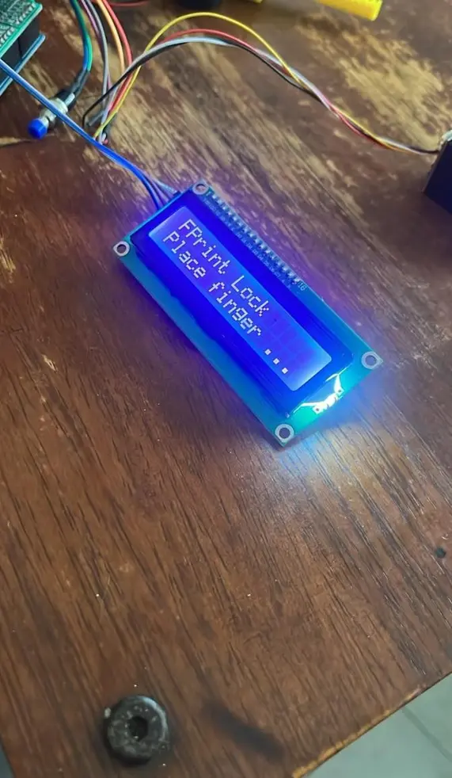

Programming
C++, Java, Python, SQL, PHP, HTML, CSS, JavaScript
Cybersecurity student · Malaysia
I create practical systems across software, networks, and embedded hardware—then study how to make them safer.
01 / About
I am a Bachelor of Computer Science (Computer Security) student at Universiti Teknikal Malaysia Melaka.
My projects connect cybersecurity with software development, networking, and embedded systems. I enjoy understanding how technology behaves, where it can fail, and how to make it more dependable.
02 / Skills
Knowledge strengthened through university projects, security labs, and hands-on development.
C++, Java, Python, SQL, PHP, HTML, CSS, JavaScript
Vulnerability assessment, OWASP testing, access control, secure development
Active Directory, DNS, VLAN, RADIUS, Windows Server, MySQL
Arduino, ESP32-CAM, fingerprint sensors, servos, GSM and IoT integration
03 / Projects
Practical work documented with implementation details and security considerations.
A biometric door-access prototype that logs authentication attempts and triggers an ESP32-CAM capture and Telegram alert after three consecutive failures.
Explore the repositoryFingerprint authentication and automatic relocking
Traceable access and incident records
Real-time image-based security alerts
Cyber evidence archive

IMAGE 01 / 19Hardware · Prototype component
02 / C++ · MySQL
03 / Web security
04 / Windows Server
04 / Contact
I’m developing my portfolio for internship and graduate opportunities in cybersecurity and software development.
Connect on GitHub